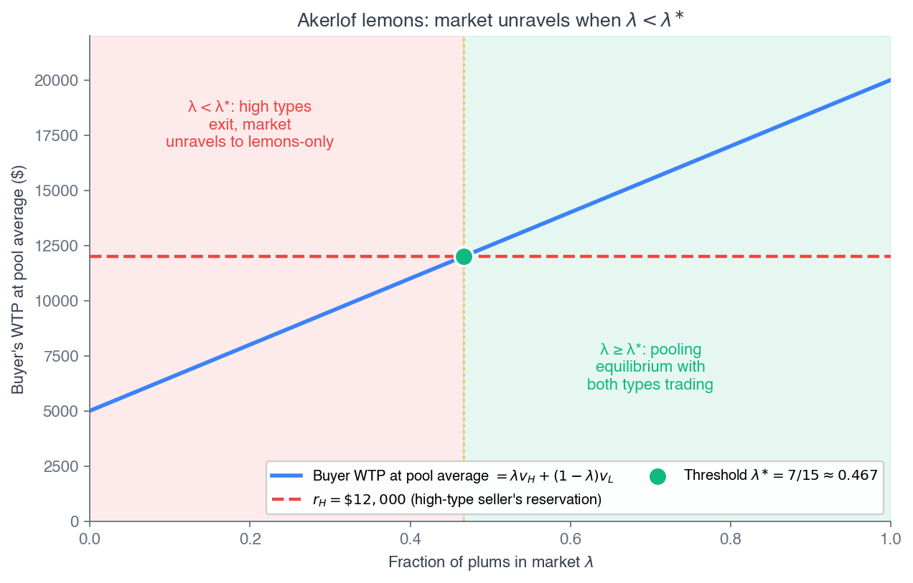
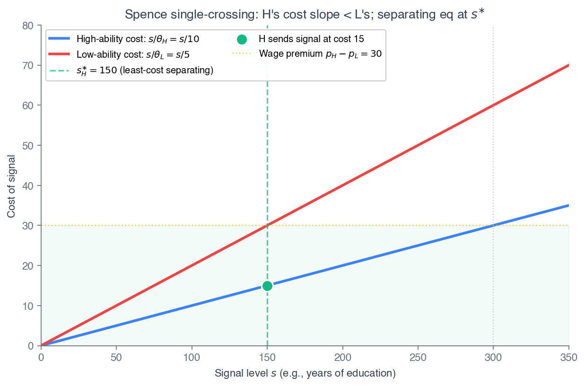
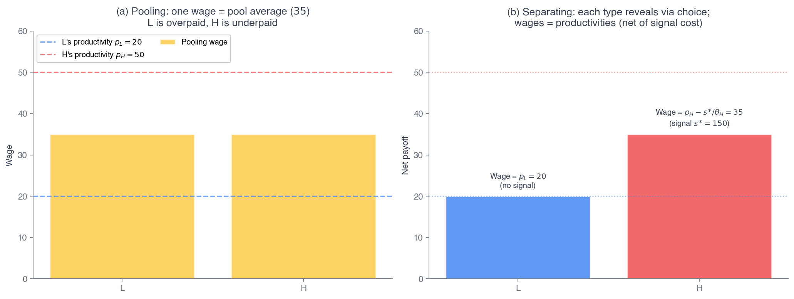
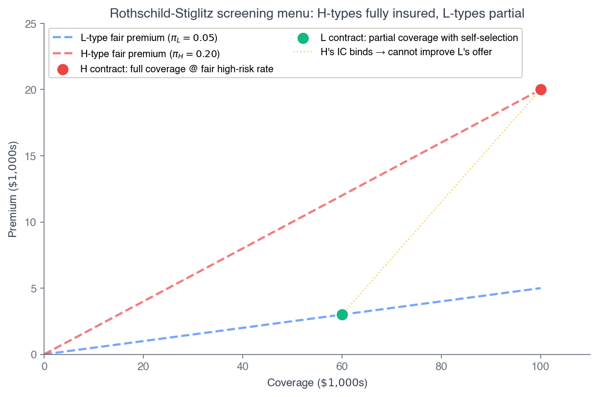
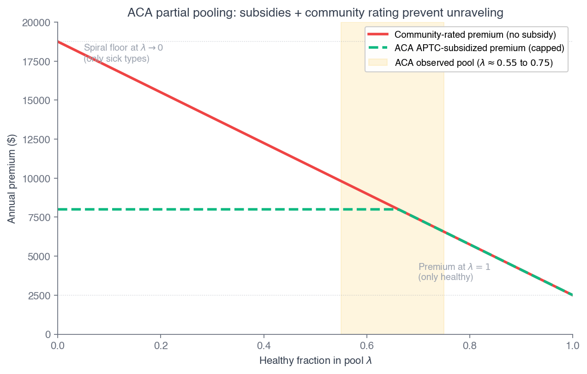

Click anywhere (or press Esc) to close
ECON 2316 • Microeconomic Theory • Chapter 16
Chapter 15 priced risk when both sides knew the odds. Now one side knows more — and markets can unravel. Lemons, signals, screens, and incentive contracts are the four moves that fight back.
Dr. Richeng Piao
Department of Economics
Northeastern University
By the end of class today, you will be able to…
1
Distinguish hidden information (adverse selection) from hidden action (moral hazard) and pick the right mathematics for each. (Bloom L4)
2
Solve Akerlof's lemons model and derive the unraveling threshold \(\lambda^{\ast}=(r_H-v_L)/(v_H-v_L)\). (Bloom L4)
3
Derive the Spence least-cost separating signal under single-crossing, and the Rothschild–Stiglitz screening menu. (Bloom L5)
4
Characterize why the second-best principal–agent contract trades insurance against incentives. (Bloom L5 — central result)
5
Explain why the ACA marketplace survives as a partial pool under regulation, not a death spiral. (Bloom L4)
Chapter 15 — what we built
Chapter 16 — the asymmetry
Same Part V theme: the welfare theorem keeps breaking. Ch 15 broke it with risk; Ch 16 breaks it with information. Four economists named the repairs — Akerlof (1970) the disease, Spence (1973) signaling, Rothschild–Stiglitz (1976) screening, Holmstrom (1979) incentive contracts. Today we build all four.
Same freelancer, same \$60,000 income, same Bernoulli utility. Last chapter she ran Mossin at a 30% loading and bought. This January she runs the realistic-loading version: net premium \$5,976, expected indemnity about \$1,970 — an effective loading of 203%.
Under log utility, the certainty equivalent of being uninsured now exceeds the CE of being insured. The math says skip the plan.
Yet CMS reported 23.1 million 2026 marketplace selections. They are not all making Maya's arithmetic error. The model is missing something — and the missing piece is information.
\$5,976
annual net premium
203%
effective loading
23.1M
2026 plan selections
Skip?
what log utility predicts
Mossin assumed the insurer faced one agent of known risk type. Real marketplaces face a distribution of types they cannot tell apart — and who shows up depends on the premium itself. That feedback loop is adverse selection. By the end of class, §16.6 resolves Maya as a partial pooling equilibrium under regulation.
§16.1
Two asymmetries, two failure modes, two families of repair
Hidden information — adverse selection
One party knows a fixed type \(\theta\), set before trade, that the other cannot observe. The used-car seller knows the engine; the applicant knows her family history.
Repairs: signaling, screening, mandatory disclosure, community rating, risk adjustment.
Hidden action — moral hazard
One party takes an action \(e\) after contracting that the other cannot observe — and that responds to the contract. The insured driver chooses care; the worker chooses effort.
Repairs: incentive contracts, monitoring, reputation.
Heads Up 16.1 — type vs action
A sharecropper's hours on the field are a hidden action (moral hazard); her farming skill is a hidden type (adverse selection). Same person, both asymmetries — but the right diagnosis tells you which mathematics to reach for. The model uses one piece at a time.
§16.2
When buyers can't tell plums from lemons, the plums can vanish
Two qualities: plums worth \(v_H\) to a buyer, lemons worth \(v_L < v_H\). Sellers know their car; buyers do not. Seller reservations \(r_H > r_L\).
If a buyer believes a fraction \(\lambda\) are plums, expected quality — and a risk-neutral buyer's WTP — is
\(E[v] = \lambda v_H + (1-\lambda) v_L\)
If WTP \(< r_H\), plum sellers exit. The pool updates to all-lemons, WTP falls to \(v_L\), and the high quality is gone.
Recall from Principles — 1116 §18.1
Principles told the lemons story in words: buyers pay only the average, high-quality sellers refuse, and the average collapses to the low price — market unraveling. Carfax, certified pre-owned, and return windows exist to fight it. This chapter pins the threshold below which unraveling is inevitable.
Result. Both qualities trade iff \(\lambda \geq \lambda^{\ast}\), where
\(\lambda^{\ast} = \dfrac{r_H - v_L}{v_H - v_L}\)
Derivation. High types participate only if WTP at the pool average clears their reservation:
\(\lambda v_H + (1-\lambda) v_L \geq r_H\)
Solve for \(\lambda\). Below \(\lambda^{\ast}\), high types keep their cars; the buyer updates to \(\lambda=0\) and bids \(v_L\). Only lemons trade (if \(v_L \geq r_L\)).
A single-round equilibrium prediction — not a multi-round death spiral.

WTP \(=\lambda v_H+(1-\lambda)v_L\) crosses \(r_H\) at \(\lambda^{\ast}\). Left of it, the market trades only lemons.
Problem. \(v_H = 20{,}000\), \(v_L = 5{,}000\), \(r_H = 12{,}000\), \(r_L = 4{,}000\). Find \(\lambda^{\ast}\); then the equilibrium at \(\lambda=0.6\) and at \(\lambda=0.4\).
1. \(\lambda^{\ast} = \dfrac{12{,}000 - 5{,}000}{20{,}000 - 5{,}000} = \dfrac{7{,}000}{15{,}000} = \tfrac{7}{15} \approx 0.467\).
2. \(\lambda = 0.6\): WTP \(= 0.6(20{,}000)+0.4(5{,}000) = 14{,}000 \geq 12{,}000\). Plums sell. Price \$14,000, every seller trades.
3. \(\lambda = 0.4\): WTP \(= 0.4(20{,}000)+0.6(5{,}000) = 11{,}000 < 12{,}000\). Plums exit → pool is all lemons → price \$5,000, only the \(0.6N\) lemons trade.
| \(\lambda\) | Pool WTP | Outcome |
|---|---|---|
| 0.6 | \$14,000 | both trade |
| 0.467 | \$12,000 | knife-edge |
| 0.4 | \$11,000 | lemons only |
Check. \(\tfrac{7}{15}(20{,}000)+\tfrac{8}{15}(5{,}000) = 12{,}000 = r_H\) ✓ — the threshold is exactly the \(\lambda\) at which WTP just covers the plum reservation.
\(v_H=\$20k\), \(v_L=\$5k\). Blue = pool WTP \(E[v]\), red = plum reservation \(r_H\), green = threshold \(\lambda^{\ast}\). Left of \(\lambda^{\ast}\) the plums exit and price drops to \(v_L\).
Problem. Low-risk claim cost \$2,000; high-risk \$15,000. Community premium \(P(\lambda)=1.25\cdot[\,2{,}000\lambda + 15{,}000(1-\lambda)\,]\) (the 80% MLR gross-up). Find the premium at \(\lambda=0.7\) and \(\lambda=0.4\), and the \(\lambda\) giving \$15,500.
\(\lambda=0.7\): avg \(= 1{,}400+4{,}500 = 5{,}900\); \(P = 1.25(5{,}900) = \) \$7,375.
\(\lambda=0.4\): avg \(= 800+9{,}000 = 9{,}800\); \(P = 1.25(9{,}800) = \) \$12,250.
\$15,500 at: bracket \(=12{,}400\Rightarrow -13{,}000\lambda = -2{,}600 \Rightarrow \lambda = 0.20\) (pool 80% high-risk).
The spiral
As \(\lambda\to 0\) (all high-risk), \(P\to 1.25(15{,}000) = \) \$18,750 — the death-spiral floor. As \(\lambda\to 1\), \(P\to\) \$2,500. The premium is monotone in \(-\lambda\).
Takeaway. Premium is a wedge function of pool composition — and composition is endogenous to the premium, because low-risk types drop out when \(P\) rises above their WTP. Which fixed point the market reaches depends on the institutional repairs of §16.6.
A community-rated insurer raises its premium after a bad year. Premiums keep climbing year after year until only high-risk people remain. What is the core mechanism?
45 sec to vote
The premium covers the average cost of whoever stays. Each hike pushes out the marginal low-risk buyer, raising the average — a fixed point in \((\lambda, P)\) space, exactly W16.2.
Trap A/C: the markup is fixed and the population's true risk is fixed. The spiral is pure composition — who shows up changes, not how sick they are or how greedy the insurer is.
Application — Carvana, Carfax, CarMax
The modern platform stack is Akerlof's institutional list. Manheim Used-Vehicle Index 215.3 (Mar 2026, +6.2% YoY); Carvana sold 596,641 retail units in FY2025, CarMax ~780,000 in FY2026. Vehicle-history reports + reconditioning + 7–10-day returns raise the effective \(\lambda\) until buyer WTP clears \(r_H\).
The market didn't unravel in 2024–26 — it industrialized.
Theory & Data 16.1 — Hendren (2013, Econometrica)
Using subjective-probability data, Hendren bounds private information by computing the mark-up rejected applicants would need to enter a pool. For long-term-care insurance: 82% — so steep it explains the standalone LTC market's near-collapse and the migration to hybrid life-LTC products.
Smaller bounds for life and disability — consistent with those markets staying viable.
Heads Up 16.2 — pooling can be the right answer. When separation is infeasible and the low-risk share is high, a single pooling contract can deliver higher utility to both types than no trade. "Less efficient" at the contract level can be more efficient at the welfare level. §16.4 makes this precise.
§16.3
The informed party pays a costly action to prove its type
Two worker types \(p_H > p_L\) choose a costly signal \(s\) (education) at cost \(c(s,\theta)\). The signal works only if cost differs by type — the single-crossing condition:
\(\dfrac{\partial^2 c}{\partial s\, \partial \theta} < 0\)
High-ability workers have lower marginal signaling cost — the same credential is cheaper for them. With \(c(s,\theta)=s/\theta\), the least-cost separating signal is
\(s_H^{\ast} = \theta_L\,(p_H - p_L)\)
IC bounds: \(\theta_L(p_H-p_L) \leq s_H \leq \theta_H(p_H-p_L)\). Least-cost picks the lower bound.

Single-crossing: the low type's indifference curves are steeper — they cross the high type's once.
Recall from Principles — 1116 §18.2
Principles framed a degree as a sorting device even if college taught nothing — high-ability workers earn the credential at lower personal cost. This chapter writes the cost structure and derives the exact least-cost signal.
Problem. \(p_H=50\), \(p_L=20\), \(c(s,\theta)=s/\theta\), \(\theta_H=10\), \(\theta_L=5\). Find the IC bounds, the least-cost \(s_H^{\ast}\), each payoff, and the welfare loss.
1. Single-crossing: \(\partial c/\partial s = 1/\theta\), \(\partial^2 c/\partial s\partial\theta = -1/\theta^2 < 0\) ✓.
2. IC bounds: low type \(20 \geq 50 - s_H/5 \Rightarrow s_H \geq 150\); high type \(50 - s_H/10 \geq 20 \Rightarrow s_H \leq 300\). So \(s_H \in [150, 300]\).
3. Least-cost: \(s_H^{\ast}=150\). Wages \(w(150)=50\), \(w(0)=20\). Payoffs: high \(=50-150/10=35\); low \(=20\).
4. Welfare loss. Symmetric info: high earns 50, low 20. Separating: high earns 35, low 20. Social surplus falls by 15 — the high type's wasted signaling cost.
Heads Up 16.3
Even at perfect separation the equilibrium is socially wasteful — the signal carries zero productive value, it only sorts. Spence's most uncomfortable result: signaling that works is still Pareto-dominated by symmetric information.
State-level GED passing thresholds vary, so two dropouts with the same test score can land on opposite sides of the credential cutoff. Same human capital, different credential — the cleanest natural experiment for isolating the signaling component.
Tyler, Murnane & Willett (2000, QJE): the GED raises young white dropouts' earnings 10–19% — with the same underlying skills, that return is the signal.
The complication: Clark & Martorell (2014, JPE) find little diploma-signaling premium at high-school exit-exam thresholds. Signaling intensity varies by credential and population.
10–19%
GED earnings premium, same score
\$15
wasted signaling cost in W16.3
~0
diploma premium (Clark–Martorell)
§16.4
The uninformed party offers a menu, and the types self-sort
Now the uninformed insurer moves first, offering a menu of contracts \((q, p)\) so each type optimally picks her own — subject to two constraints:
Incentive compatibility — each type prefers her own contract
Individual rationality — each type prefers it to no contract
Result: high-risk type gets full coverage at her fair premium; low-risk type gets partial coverage, distorted down until the high-risk type is just indifferent to mimicking.

Pooling vs separating in state-contingent wealth space.
Problem. \(\pi_L=0.05\), \(\pi_H=0.20\), \(L=10{,}000\), \(W_0=50{,}000\), \(u=\ln W\). Solve the symmetric benchmark, then the separating menu.
1. Symmetric. Both fully insure: low pays 500 (wealth 49,500, \(u\approx 10.80983\)); high pays 2,000 (wealth 48,000, \(u\approx 10.77896\)).
2. High-risk contract unchanged: full coverage, wealth 48,000.
3. Low-risk \(q_L\) set so the high type is indifferent to mimicking:
\(\ln 48{,}000 = 0.8\ln(50{,}000-0.05q_L)+0.2\ln(40{,}000+0.95q_L)\)
4. Bisection: \(q_L^{\ast} \approx \$977.25\) — far below the \$10,000 full-coverage benchmark.

Check. At \(q_L^{\ast}\), high-risk mimic-EU \(\approx 10.77893 = \ln 48{,}000\) ✓ — the high-risk IC binds, as required.
Heads Up 16.4 — existence can fail
When low-risk types are a large share, an insurer can profitably deviate to a pooling contract priced at the pool average, attracting both types and beating the menu. Then no pure-strategy separating equilibrium exists.
Wilson (1977) and Riley (1979) restore existence with refined concepts — the menu structure survives empirically even where pure-strategy equilibrium is fragile.
Application — LTC & multidimensional info
Standalone LTC sales fell ~80% from a 2002 peak; the market migrated to hybrid life-LTC (>\$17B new premium in 2025). Finkelstein–McGarry (2006): high-risk people buy more, but cautious low-risk people also buy more — the two cancel in the raw correlation, so clean menu screening isn't feasible.
Health-plan tiers screen too. Bronze / Silver / Gold sort consumers on coverage-vs-premium taste. Marone & Sabety (2022): under community rating, the welfare gain from vertical choice is much smaller than "more variety is better" suggests.
In the Rothschild–Stiglitz separating menu, whose contract gets distorted away from the symmetric-information ideal — and in which direction?
40 sec to vote
"No distortion at the top." The high-risk type gets her efficient full coverage; the low-risk type's coverage is pulled down (W16.5: \(q_L^{\ast}\approx\$977\) vs \$10,000) just enough to bind the high-risk IC.
Same pattern as Mirrlees taxation: the top type is undistorted; everyone below pays an information rent. That's the mechanism-design thread in the chapter appendix.
§16.5
Hidden action: pay for output to buy effort — and bear the risk cost
First-best — effort observable
Risk-neutral principal pays a fixed wage conditioned on effort; absorbs all output risk. Perfect insurance for the risk-averse agent. Clean.
Second-best — effort hidden
A fixed wage gives no reason to work. The principal must make wage vary with output, exposing the agent to risk and paying a risk premium. Insurance traded against incentives.
Heads Up 16.5 — mitigated, not eliminated
Monitoring tightens the effort–output link and pushes the second-best toward first-best — but monitoring is costly, so optimal intensity is interior. Quotas, billable-hour audits, KPI dashboards, performance RSUs where output is informative; fixed wages survive where output is too noisy.
Theory & Data 16.2 — Brot-Goldberg et al. (2017, QJE)
A large employer forced everyone onto a high-deductible plan. Spending fell 11.8–13.8% — driven by quantity cuts (fewer visits, scripts, ED trips), not price-shopping. And cuts were broad: high-value preventive care fell about as much as elective.
Deductibles are blunt incentives: they reduce moral hazard by reducing care across the board.
Application — CEO compensation
Hall & Liebman (1998): large-firm CEOs hold enough stock and options that the firm-performance / CEO-wealth link is far stronger than salary suggests — pay-for-performance flows through equity, as Holmstrom predicts.
SEC's 2022 Pay-vs-Performance rule standardizes the comparison. Bebchuk–Fried (2003): board capture shapes pay too — both stories carry real content.
§16.6
Why a market with hidden information survives — as a regulated partial pool
Maya is a low-risk type whose individual WTP is below the community premium. If the insurer could risk-rate her, Mossin says full coverage at \$2,000 and she buys. Community rating forbids that — so the relevant premium is the pool average, above what her own log utility justifies.
The equilibrium doesn't collapse to the all-high-risk floor because of a stack of institutional repairs:

Subsidies + mandates + risk adjustment hold \(\lambda\) above the death-spiral floor.
Problem. \(P(\lambda)=1.25[\,2{,}000\lambda+15{,}000(1-\lambda)\,]\). Low-risk drop out when net premium exceeds \$5,976. Find the no-subsidy equilibrium \(\lambda^{\ast}\); then the subsidized outcome.
1. No subsidy: \(P=5{,}976\Rightarrow\) bracket \(=4{,}780.8\Rightarrow -13{,}000\lambda=-10{,}219.2\Rightarrow \lambda^{\ast}=0.7861\). Fragile — below it, low-risk types exit en masse.
2. Post-cliff subsidy caps low-risk payment at \$5,976. Realistic \(\lambda\approx 0.65\): \(P=1.25[1{,}300+5{,}250]=\) \$8,187.50. Treasury covers \(8{,}187.50-5{,}976=\$2{,}211.50\) per low-risk enrollee.
3. IRA-enhanced (8.5% cap, no cliff): more low-risk enroll, \(\lambda\approx 0.75\Rightarrow P=\$6,562.50\). Better pool, lower premium.
| Regime | \(\lambda\) | Gross \(P\) |
|---|---|---|
| No subsidy (knife-edge) | 0.786 | \$5,976 |
| Post-cliff 2026 | 0.65 | \$8,188 |
| IRA-enhanced | 0.75 | \$6,563 |
Takeaway. Maya's choice is not the Ch 15 Mossin-symmetric problem — it's Rothschild–Stiglitz-plus-regulation. The partial pool is jointly determined by individual utility, pool composition, gross premium, and the repair stack.
CMS reported 23.1 million selected or auto-reenrolled in 2026 coverage. Effectuated enrollment — counted only after the first premium payment — had not been released as of late April 2026.
The two can diverge 5–15% in subsidy-cliff years. Distinguish them in any homework: 23.1M selected, an as-yet-unspecified number paid.
The gap is itself a dynamic adverse-selection signal: the people most likely to drop after auto-renewal are the low-risk types whose net premium just rose.
23.1M
selected / auto-reenrolled
3.8–5.8M
projected effectuation shortfall
5–15%
selected-vs-effectuated gap
1. Taxonomy. Hidden information (fixed type, adverse selection) vs hidden action (chosen effort, moral hazard) — different math, different repairs.
2. Akerlof. Market unravels when WTP at the pool average falls below the high-type reservation: \(\lambda^{\ast}=(r_H-v_L)/(v_H-v_L)\).
3. Spence. Under single-crossing the high type signals just enough to deter mimicking, \(s_H^{\ast}=\theta_L(p_H-p_L)\) — perfect sorting, socially wasteful.
4. Rothschild–Stiglitz. Screening menu: high-risk full coverage, low-risk distorted down to bind the high-risk IC. May fail to exist when low-risk share is high.
5. Holmstrom. Second-best ties pay to observable output, so the agent bears risk; that risk premium is the welfare cost of moral hazard.
6. ACA. 23.1M enroll despite high loading because the equilibrium is a regulated partial pool — subsidies, MLR floor, risk adjustment hold \(\lambda\) above the spiral floor.
End of Chapter 16
Next — Ch 17: Externalities & Public Goods, where one party's choice spills onto another and the welfare theorem breaks again